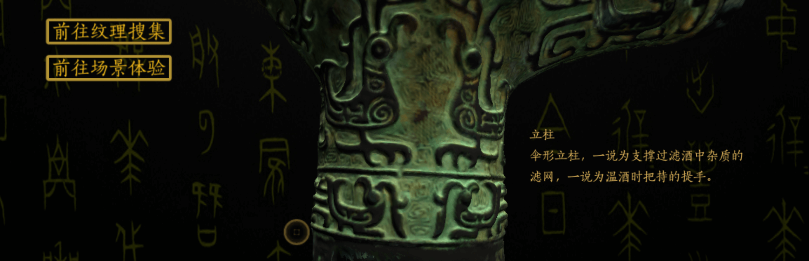
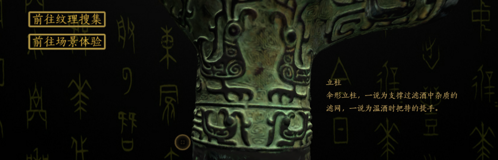

3D博物馆
文物模型交互个人工作：参与前期问题痛点提出、平台功能以及交互模型流程策划，全部网站平台搭建（XHTML/CSS/JavaScript）以及部分Unity3D交互程序制作
文物模型可多角度旋转拉伸，以虚拟方式体验文物的魅力。交互过程植入历史与文化，唤醒文物，让文物说话。通过各种趣味的交互模式，让不同年龄段的人学习文化艺术知识，体验文物制作和再创作的过程。
点击进入网页：https://wmingc.github.io/3D_Museum/模型交互内容在“唤醒文物-青铜器-爵”子目录下，初次打开缓存较慢请等待